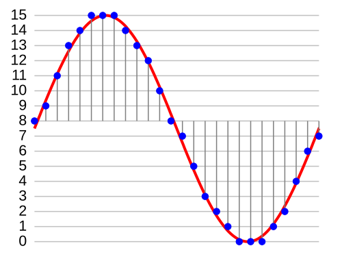
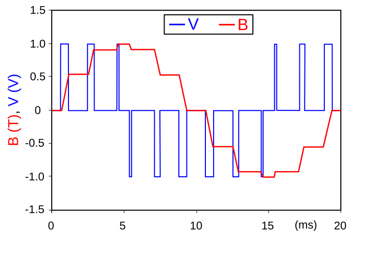
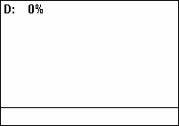
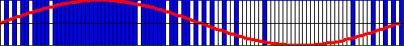
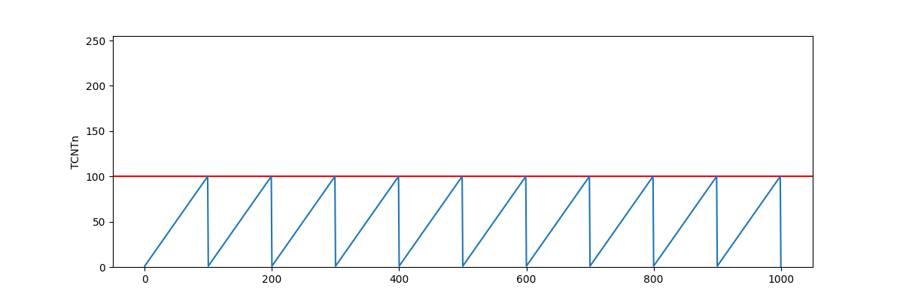
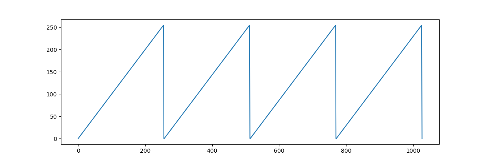
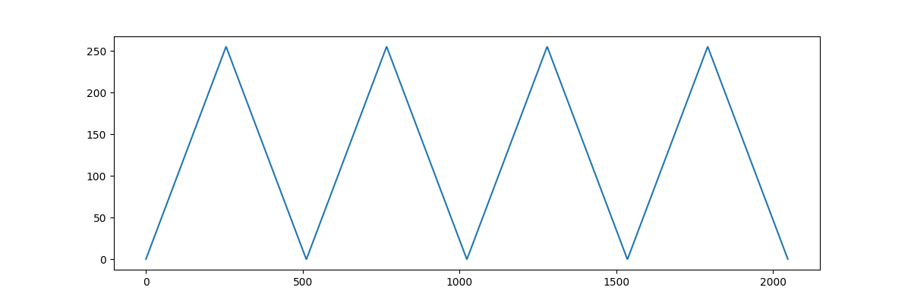
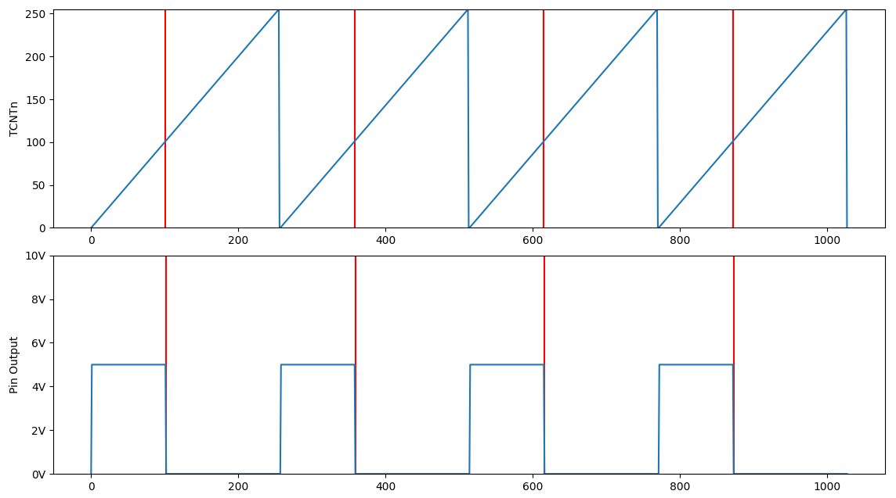

The ultimate goal is to play Losing My Religion by R.E.M. The MIDI file I have of it (that I ripped off the internet) is 40KB, larger than the ATmega's 32KB of program memory. It has up to 10 different notes playing at once. This is possible, but it's going to take a bit of head scratching. Let's figure this out.
When I write. I pretend that I'm talking to my past self. This is what I wish I knew when I started this project and what I learnt after I've completed it. It's structured like a tutorial but you don't neccessarily have to follow along.
What is Sound? #
Let's explain some terminology.
Pulse-code modulation (PCM) #
Is a digital audio format. It represents the waves of audio digitally, with bits and bytes, 1s and 0s. It represents audio as a list of points and their amplitudes. Every point is sampled at a uniform interval.

Pulse-width modulation (PWM) #
Is an analog audio format. It represents the waves of audio as electrical pulses. Wider pulses have a higher amplitude. By sending differently sized pulses we can construct an audio wave.

The width of the pulses is called it's duty cycle. Let's say we send one pulse per second. If the pulse is on for 0.25 seconds and off for 0.75 seconds, it would have a 25% duty cycle, because it's on 25% of the time.

Pulse-density modulation (PDM) #
Is an analog and digital audio format. It can be used to store data digitally, as 1s and 0s, and it can be used to send electrical pulses. To compare it to PWM. PWM encodes amplitude by using longer and shorter pulses. While PDM encodes amplitude by using more or less pulses.
0101011011110111111111111111111111011111101101101010100100100000010000000000000000000001000010010101

And how do we play it. #
Let's start off by playing a WAV file on Arduino. WAV files are quite big because they contain a lot of audio sample data but we should be able to fit about 3 seconds of audio in the Arduino.
Here is our example.wav file.
WAV files support many different formats of storing audio data. This example.wav file is 8-bit PCM 8KHz Mono. That means.
- It uses 8-bit samples.
- It's encoded using PCM.
- It's 8,000 samples per second, or a sample rate of 8KHz.
- And it plays the same sounds in both ears.
All you really need is a search engine and a hex editor and you can get to parsing wav files on your own. Of course, I'll provide some description about wav files here.
WAV File Format #
A WAV file is stored as a chunk inside of the RIFF file format. So to understand WAV files we must first understand RIFF.
RIFF, or Resource Interchange File Format, (what a mouth full!) is a container format that lets you store data in chunks. Chunks can contain subchunks. There is a top-level RIFF chunk and everything else is a child of it. So it ends up forming a tree-like data-structure.[0]
RIFF is notably used in AVI and WAV files. Every RIFF file starts with the text "RIFF" at the beginning. Open up an AVI or WAV file in a text editor and see for yourself. Or
Yup, starts with RIFF. That is in fact a RIFF file.
The RIFF tag is followed by the length of the chunk. That 0x7a34 in hex or 31284KB, the size of our file.
Then after it is the tag of the first subchunk. In this example it's " because we are looking at a WAV file. If you're looking at an AVI file it will show ". It's important to note that some RIFF tags contain whitespace. That " tag is actually 4 bytes long because it has an ending whitespace (hex 0x20). The same is true for the " tag.
Most WAV files only have two chunks, the " and " chunks. It's not important to create a comprehensive WAV file parser that handles all the quirks of the format. Here is the basic WAV file header.
| Name | Size in bytes | Description |
|---|---|---|
| "RIFF" | 4 | "RIFF" four-character code |
| Chunk size | 4 | File size minus 8 bytes |
| "WAVE" | 4 | "WAVE" four-character code |
| "fmt " | 4 | "fmt " four-character code |
| Chunk size | 4 | Chunk size, in this case, equal to 16 or 0x10 |
| Audio format | 2 | (0x1) PCM, (0x3) IEEE float, (0x6) ALAW, (0x7) MULAW, (0xFFFE) EXTENSIBLE |
| Number of channels | 2 | Number of audio channels. (e.g 1 = Mono, 2 = Stereo) |
| Sample rate | 4 | Number of samples per second. |
| Bytes per second | 4 | (Sample rate * Number of channels * Bits per sample)/8 |
| Bytes per block | 2 | (Number of channels * Bits per sample)/8 |
| Bits per sample | 2 | Amount of bits in a sample |
| "data " | 4 | "data " four-character code |
| Chunk size | 4 | Size of sampled data |
| Audio data | Audio samples |
Writing to WAV #
Now we understand the WAV file format. Let's try synthesizing some music into it. I'll use Python in my examples, but any language will do. I suggest writing your own WAV file parser, of course.
We'll import the libraries we need.
import math
import wave
Then we'll create the wav file.
sample_rate = 44100
f = wave .open ("out.wav" , "wb" )
f .setframerate (sample_rate )
f .setnchannels (1 )
f .setsampwidth (1 )
1 we are encoding 8-bit audio.
Now let's write a simple sine wave tone.
samples = []
# start a loop that will generate 5 seconds of audio.
for i in range (sample_rate * 5 ):
# create the next audio sample for the sine wave with a frequency of 440Hz
sample_float = math .sin (440 * (i /sample_rate ) * math .tau )
# convert a float with the range of -1..1 into an 8-bit integer with the range of 0..255
sample_byte = math .floor ((sample_float +1 )/2 *255 )
samples .append (sample_byte )
f .writeframes (bytes (samples ))
Try messing around with the variables and see what happens. If you set 2 you'll need to append twice and add another
As you can see,
Dumb WAV on Arduino #
Let's dump the PCM audio samples from that example.wav file into an Arduino .ino script. Let's put it in a variable called " WAV chunk. By the way, you can choose whatever audio file you want. Just make sure that the sample rate and sample width is reaallly low.
const PROGMEM uint8_t audio_data [] = {
// Literally just the numbers from the "data" WAV chunk pasted in.
127 ,169 ,207 ,235 ,251 ,254 ,242 ,217 ,182 , ... etc
};
The PCM audio data, in the context of PWM, can be seen as a list of duty cycles. To generate the duty cycle for an audio sample with the value of 100 we would need to turn the speaker pin on for 100 ticks and then off for 155 (255-100) ticks.
Let's create the speaker pin.
const int SPEAKER_PIN = 11 ;
And make sure to set it to output.
void setup () {
pinMode (SPEAKER_PIN , OUTPUT );
}
Now to output PWM audio to the speaker!
void loop () {
// for every sample
for (int i = 0 ; i < sizeof (audio_data ); i ++) {
// turn it on for a bit
for (int j = 0 ; j < pgm_read_byte (&audio_data [i ]); j ++) {
digitalWrite (SPEAKER_PIN , HIGH );
}
// and then off for a bit
for (int j = 0 ; j < (255 - pgm_read_byte (&audio_data [i ])); j ++) {
digitalWrite (SPEAKER_PIN , LOW );
}
}
}
Hmmm... that doesn't sound quite right. That's probably because our program is trying to play the audio samples as fast as it possibly can. It'd be better if our program played the audio at the speed of the audio instead of going crazy fast.
About Timers #
Luckily, the ATmega328P has a useful function. Hardware timers. Not only will they let us time our program so that it generates samples at the right speed, but the ATmega328P also happens to support a PWM mode for it's timers that will do the "turning on for a bit and turning off for a bit" part for us. Nice!
There are three hardware timers on the ATmega328P. Timer 0, Timer 1, and Timer 2. Each timer has different modes that they support, different bit resolutions, and different uses in an Arduino. Here's a table showcasing their differences.
| Resolution | Used for | Ouput pins in PWM mode | |
|---|---|---|---|
| Timer 0 | 8-bit | delay, millis, micros |
5, 6 |
| Timer 1 | 16-bit | Servo Functions | 9, 10 |
| Timer 2 | 8-bit | tone |
11, 3 |
Changing the options of timers that the Arduino relies on can cause broken behaviour. In this case, we'll be using (and abusing) Timer 1 and Timer 2. Which is OK since our project won't be using servo or tone functions.
How hardware timers work is quite simple. A timer is a counter that constantly increases. When it hits the unsigned integer limit it resets back to 0. 8-bit timer, TOP = 255. 16-bit timer, TOP = 65535. Each timer has two output comare registers (OCRnA/OCRnB). When the timer counter is equal to an output compare register, some action will be performed. You can configure the output compare register to, activate a hardware interrupt, reset the timer to 0 early, or output PWM to a pin.
Usually, the timer counter increases at the speed of the CPU clock, 16MHz on the ATmega328P. Alternatively, you can use an external clock to increment the timer counter. There is a configuration option in the timers called a prescaler. The prescaler divides the clock frequency to slow-down the timer's counting speed. By default, the prescaler is set to divide by 0 which will just disable our timer. We won't be using the prescaler here, so we'll just configure it to divide by 1.
Sadly, configuring the hardware timers is a huge pain. You have to set a bunch of discontinous bits in various registers. The ATmega328P Manual documents them quite nicely and so does this online guide, but we'll just focus on the options we care about here.
First things first, we want to be able to loop through the audio samples in a timely manner. Specifically, we want to loop through the audio samples at a rate of 8,000 samples per second, because that is our sample rate. We'll do this using Timer 1. We'll set Timer 1 to CTC mode (Clear Timer on Compare match) which will reset the timer to 0 when it reaches the value of an output compare register. Then we can change the output compare register to make our timer faster or slower.

OCRn (output compare register) is set to 100.We can use this handy formula to figure out what value to set our output compare register to:
OCRn = (clockSpeed / prescalerValue ) * timeSecs - 1 clockSpeed is how fast our timer increases. Since we have a prescaler of 1 and we want a timeSecs of 1/8000 we can simplify to:
OCRn = clockSpeed / 8000 - 1 Finally, we need to tell the timer to interrupt when it resets. We have to disable interrupts while configuring the timer because it might interrupt in the middle of us configuring it. Here is the code that will configure our timer.[2]
void setup () {
// Disable interrupts temporarily.
cli ();
// Turn on CTC (Clear Timer on Compare match) for Timer 1
TCCR1A &= ~_BV (WGM10 );
TCCR1A &= ~_BV (WGM11 );
TCCR1B |= _BV (WGM12 );
TCCR1B &= ~_BV (WGM13 );
// Set prescaler to divide by 1
TCCR1B |= _BV (CS10 );
TCCR1B &= ~_BV (CS11 );
TCCR1B &= ~_BV (CS12 );
// Set compare register to go at the speed of 8KHz.
// F_CPU is the CPU clock cycle Hz, or how fast the timer increases.
OCR1A = F_CPU / 8000 - 1 ;
// Enable interrupts when timer counter == OCR1A
TIMSK1 |= _BV (OCIE1A );
// Re-enable interrupts.
sei ();
}
Then we can create an Interrupt Service Routine that activates when our timer resets.
// Interrupt vector for OCR1A
ISR (TIMER1_COMPA_vect ) {
// This will be called 8,000 times per second.
// Do nothing for now.
}
Now we need to output PWM data onto a speaker pin. To do this, we'll need to understand how timer PWM modes work. In PWM mode, each timer has specific pins that they output to. (refer to the table above to see which pins each timer outputs to) Since there are two output compare registers for each timer (OCRnA/OCRnB), each timer can output to two pins.
There are two PWM modes, phase correct PWM and fast PWM. Fast PWM counts up to TOP and then immediately resets to 0, while phase correct PWM counts up to TOP is the integer limit by default, but it can be set to the value of an output compare register.


In each PWM mode, there are two PWM output modes. Inverting and non-inverting. In non-inverting mode, the timer outputs HIGH to it's designated pin when it is less than the output compare register and outputs LOW when it is greater than the output compare register, and vice versa for inverting mode.
| TCNTn <= OCRn | TCNTn > OCRn | |
|---|---|---|
| Non-Inverting | HIGH | LOW |
| Inverting | LOW | HIGH |

OCRn = 100. The blue on the top is the value of the timer counter, the blue on the bottom is the output pin voltage level, and the red is the value of OCRn. See how changing OCRn could affect the PWM duty cycle.For this project, we'll be using Timer 2 in fast PWM mode. For now we will be making it output to just pin 11, but later on we'll get it to output to two pins at once for better audio quality. Here is the code that will configure Timer 2.
// Turn on fast PWM mode for Timer 2.
TCCR2A |= _BV (WGM20 );
TCCR2A |= _BV (WGM21 );
TCCR2B &= ~_BV (WGM22 );
// Turn on non-inverting mode for pin 11.
// Output on pin 11 will be HIGH when TCNT2 <= OCR2A and LOW when TCNT2 > OCR2A
TCCR2A &= ~_BV (COM2A0 );
TCCR2A |= _BV (COM2A1 );
// No prescaler. (set to divide by 1)
TCCR2B |= _BV (CS20 );
TCCR2B &= ~_BV (CS21 );
TCCR2B &= ~_BV (CS22 );
Now whenever we set
// Variables modified by interrupts need to be marked "volatile"
volatile int sample_idx = 0 ;
ISR (TIMER1_COMPA_vect ) {
OCR2A = pgm_read_byte (&audio_data [sample_idx ++]);
if (sample_idx == sizeof (audio_data )) sample_idx = 0 ;
}
Ahhh, music to my ears.
MIDI Synthesizer #
Now we know how to play PWM audio. We need to write a MIDI synthesizer to generate that PWM audio. To start off, we'll need to understand how MIDI files work and how to parse them.
MIDI File Format #
MIDI is not just a file format, but a streaming format too. It's used to both store music and to communicate music between devices. When you connect a MIDI keyboard to your computer, the keyboard will speak to your computer in MIDI.
There are (as of writing) 3 MIDI formats. 0, 1, and 2. Each new format version supports more features. There are a multitude of differences between the formats, but the primary ones are the following.
- In format 0. A MIDI file has one track and is essentially a list of notes, along with some metadata like tempo or song name.
- In format 1. MIDI now supports multiple tracks. These tracks are played at the same time.
- In format 2. MIDI can now play tracks at different times instead of being forced to play them in sync.
Format 1 is most common and unless you plan to create a comprehensive MIDI file parser, that is what you should be trying to parse. Here are some resources that were useful to me when I was learning the format.
- midimusic.github.io - A detailed but somewhat hard to follow explanation of the MIDI specification.
- petesqbsite - A more friendly but less detailed explanation.
Bring out your favourite hex editor because we're going to be writing a MIDI file by hand. After all, it's the best way to learn how things work.
We'll be writing a format 1 MIDI file. Every MIDI file should start with the hex MThd or MIDI Track header in ASCII. After it, is a 4-byte header length. The length of the MThd header is always 6 bytes. The MIDI file format stores numbers in big-endian, so our hex should now look like this.
4D 54 68 64 00 00 00 06 Then after that is three 16-bit numbers for the format version, number of tracks, and division.
4D 54 68 64 00 00 00 06 00 01 00 01 01 80 In this example, the format version is 1, and the number of tracks is 1. The division specifies how many MIDI ticks are in a quarter note, which let's us control how fast our music is played. In this example, we set it to 384 in decimal, 384 ticks in a quarter note.
After the MThd chunk, we have our first "track chunk". Every track chunk starts with MTrk or hex
4D 54 72 6B ?? ?? ?? ?? Since we don't know how long we want our track to be yet, we'll leave that part empty.
After the MTrk header, is a series of track events. Some examples of track events are "note on", "note off", or "end of track". Let's just play a single tone. That means we'll need a "note on" event, followed by a "note off" event, and ending in an "end of track" event.
Every track event is preceeded by a delta time value, which indicates how long to wait before executing that event. For example, if I have a note on event preceeded by a delta time of 100. Then I would need to wait 100 ticks before playing that note.
Delta time is stored as a "variable length quantity" which is a format MIDI uses to encode certain numbers. The basic idea of it is that smaller numbers take up less space than bigger numbers. Variable length quantities are represented as 7-bits per byte. All bytes except the last, have bit 7 set.
The number 255 encoded as a variable length quantity would look like the following in binary.
1 0000001 0 1111111 In simple terms, the last bit says "you haven't reached the end, keep looking", and all the digits except the last ones are appended to each other.
1 0000001 0 1111111 _ 0000001 _ 1111111 = 255For reference, here is some C code for parsing VLQs into a 64-bit integer.
uint64_t value = 0 ;
while (true ) {
uint8_t b = read_byte ();
value = (value << 7 ) | (b & 0x7f );
if (b >> 7 == 0 ) break ;
}
Now let's look at the structure of a note on event.
1001 nnnn 0 kkkkkkk 0 vvvvvvv As you can see, a note on event is three bytes long.
The structure of a note off event is very similar.
1000 nnnn 0 kkkkkkk 0 vvvvvvv And again, the velocity can change how the note sounds, even in a note off event. For our synthesizer, because it is so simple, we will just ignore velocity entirely.
Here is a table that maps a musical note to a 7-bit note number.
| Octave | C | C# | D | D# | E | F | F# | G | G# | A | A# | B |
|---|---|---|---|---|---|---|---|---|---|---|---|---|
| 0 | 0 | 1 | 2 | 3 | 4 | 5 | 6 | 7 | 8 | 9 | 10 | 11 |
| 1 | 12 | 13 | 14 | 15 | 16 | 17 | 18 | 19 | 20 | 21 | 22 | 23 |
| 2 | 24 | 25 | 26 | 27 | 28 | 29 | 30 | 31 | 32 | 33 | 34 | 35 |
| 3 | 36 | 37 | 38 | 39 | 40 | 41 | 42 | 43 | 44 | 45 | 46 | 47 |
| 4 | 48 | 49 | 50 | 51 | 52 | 53 | 54 | 55 | 56 | 57 | 58 | 59 |
| 5 | 60 | 61 | 62 | 63 | 64 | 65 | 66 | 67 | 68 | 69 | 70 | 71 |
| 6 | 72 | 73 | 74 | 75 | 76 | 77 | 78 | 79 | 80 | 81 | 82 | 83 |
| 7 | 84 | 85 | 86 | 87 | 88 | 89 | 90 | 91 | 92 | 93 | 94 | 95 |
| 8 | 96 | 97 | 98 | 99 | 100 | 101 | 102 | 103 | 104 | 105 | 106 | 107 |
| 9 | 108 | 109 | 110 | 111 | 112 | 113 | 114 | 115 | 116 | 117 | 118 | 119 |
| 10 | 120 | 121 | 122 | 123 | 124 | 125 | 126 | 127 |
Let's write in hex, a note on event on channel 0 (
00 90 30 7F Then follow it with a note off event on channel 0 (
A7 08 80 30 00 Then to finish it off, we want to create an "end of track" event. Which is simply the following in hex.
00 FF 2F 00 Now that we're done we can fill in the MTrk header length which we previously left blank. Putting it together we now have.
4D 54 68 64 00 00 00 06 00 01 00 01 01 80
4D 54 72 6B 00 00 00 0C
00 90 30 7F
A7 08 80 30 00
00 FF 2F 00
Our very own hand-written MIDI file!
MIDI to WAV #
Now that we understand how MIDI works, and we understand how WAV works. Let's make a MIDI to WAV file synthesizer!
Immediately we're faced with a problem. MIDI is a format that stores music as notes, while WAV is a format that stores music as audio samples. Earlier we learned about a formula that generates audio samples from a given frequency.
math .sin (440 * (i /sample_rate ) * math .tau )That's great, but how do we find the frequency of a note, say, B4? Well the frequency of B in octave 4 happens to be 493.88 Hz, but, that's a bit of a pain to remember. Is there a useful formula that can help us calculate the frequency of a note? Yes! There is!
In Western musical notation there is something called 12 equal temperament where one octave is divided into 12 parts, each part is on a logarithmic scale, and each part is assigned a note! That's right. 12 notes per octave. The notes frequencies are on a logarithmic scale. And the formula we use to calculate them.
440 * 2 note /12
That's great but MIDI notes are shifted by 57. In twelve equal temperament C4 = -9 but in MIDI C4 = 48. So we need to adjust our formula to subtract by 57.
440 * 2 (note -57 )/12 Let's plug our new found formula into our program to start synthesizing MIDI. I'll use Python in my examples, but you should be using your own MIDI and WAV file parsers.
# Play C4 for 5 seconds.
sample_rate = 44100
f = wave .open ("out.wav" , "wb" )
f .setframerate (sample_rate )
f .setnchannels (1 )
f .setsampwidth (1 )
samples = []
note = 48
frequency = 440 * 2 **((note -57 )/12 )
for i in range (sample_rate * 5 ):
sample_float = math .sin (frequency * (i /sample_rate ) * math .tau )
sample_byte = math .floor ((sample_float +1 )/2 *255 )
samples .append (sample_byte )
f .writeframes (bytes (samples ))
And here's Losing My Religion by R.E.M. synthesized to WAV from a MIDI file.
If you want to play multiple frequencies polyphonically, you need to add the audio samples together.
samples .append (a + b + c )Be careful though! Because you're limited to 8-bit numbers, the sound can start to clip once they get too loud or produce strange artifacts if the numbers overflow.
on Arduino. #
LZW Compression #
Earlier I said my MIDI file of Losing My Religion was 40KB, larger than the 32KB of program memory in the Arduino. To fit the music into memory I first converted the multi-track format 1 MIDI data into a single-track custom-made format that I could feed directly into the Arduino. Then I wrote a compression algorithm that compresses that custom-made format. After doing that, the MIDI data was 16KB, comfortably fitting under the 32KB limit. The Arduino could then decompress data on-the-fly as it was needed.
The custom-made format is stored as a list of track events.
| Format for Packed MIDI |
|---|
| Track Event |
| Track Event |
| Track Event |
| ... |
Each track event is a list of notes followed by a delta time value indicating the amount of PCM samples to generate for those notes. The numbers are in big-endian.
| Format for Track Event | |
|---|---|
| Data type | Size in bytes |
| NOTE_COUNT | 1 |
| NOTE | 1 |
| NOTE | 1 |
| NOTE | 1 |
| ... | ... |
| DELTA_TIME | 4 |
For the compression algorithm, I used a form of Lempel-Ziv-Welch or LZW. LZW is a really simple algorithm. In fact it's so simple, here's the psuedo-code for the whole compression algorithm.
p = next_char ();
while not_eof ():
c = next_char ();
if (p + c ) in string_table :
p += c
else :
string_table .insert (p + c )
compressed_data .append_code (p )
p = c
I made a few changes to the algorithm for my version of this project. In regular LZW you construct a table of patterns as you are decompressing the data. This won't do for Arduino because Arduino doesn't have enough space to store a dynamically changing table of patterns.
Instead we use LZW to find patterns in the data, we filter out patterns that cost more to store than they save, and then we place a map of "short-codes to patterns" in program memory. Then when decompressing, the decompressor only has to check in the map to see the corresponding pattern that a short-code represents. The pattern map is built in a way where the decompressor can easily index into it.
The decompressor returns slices of data which allows it to be agnostic over whether the slices it's returning are stored directly in the compressed data or from the pattern map.
I considered chaining LZW with Huffman coding to get better compression and I did get part way through the implementation of it before I decided that, because of the "sub-byte level" operations required, it'd probably be too complex to code on the Arduino and the performance overhead of decompression might not be worth it. Of course, if someone was to implement huffman coding you could get much more out of your memory.
You can see the source code here.
Bits, Bytes, and Performance #
Currently our algorithm for generating audio samples from notes is sub-optimal. We absolutely cannot be doing float operations 8,000 times per second on an 8-bit microcontroller. No, no, no. The ATmega328P additionally does not have any hardware integer division instruction, so we can't be doing that either.
We have a few tricks up our sleeve. First of all, we can use some bit-wise operations to fake division and modulus instructions.
Let's not calculate sin and twelve equal temperament on the Arduino, and instead opt to pre-calculate them and store them in a
The length of our sintable should be a power of two so we can easily modulo indexes into it, let's make it 256 bytes long. Our sample rate should be a power of two so we can easily divide by it, let's change it from 8000 to 8192 or 213
Previously, our formula was.
math .sin (frequency * (i /sample_rate ) * math .tau )Let's change it to index into our sintable, and hard-code the
sintable [(frequency * (i /8192 ) * math .tau * 255 ) % 256 ]And then pre-calculate * into our sintable.
tau_sintable [(frequency * (i /8192 ) * 255 ) % 256 ]Then we'll reorder some of the operations to avoid rounding errors.
tau_sintable [((frequency * i * 255 ) / 8192 ) % 256 ]In bit-ops this would be.
tau_sintable [((frequency * i * 255 ) >> 13 ) & 0xff ]Now our formula for generating audio samples from a note is just a few array indexes, integer multiplications, and bit-wise ops.
C functions have seemingly a lot of performance overhead on the ATmega328P so I'd suggest putting all your functions in C macros instead.
Faking Polyphonics #
We can easily get two-voice polyphony by outputting to two pins and wiring them together. Remember to put resistors between the pins or you'll short the ATmega328P like I did.
ISR (TIMER1_COMPA_vect ) {
// Output on pin 11
OCR2A = generate_audio_sample ();
// Output on pin 3
OCR2B = generate_audio_sample ();
}
void setup () {
// Previous timer setup code
...
// Turn on non-inverting mode for pin 3.
// Output on pin 3 when OCR2B is changed.
TCCR2A &= ~_BV (COM2B0 );
TCCR2A |= _BV (COM2B1 );
}
But, earlier I said we had up-to ten notes playing at once in the MIDI file. This is impossible to play on the Arduino. Not only because there aren't enough pins to output ten notes, but there isn't enough CPU bandwidth to generate 10 audio samples in 1/8000th of a second either... But who said we had to play ten notes at once? It only needs to sound like ten notes at once.
The solution is pretty simple. Whenever we have multiple notes playing at once. We alternate between them. For example, we have C, D, E, and F playing at the same time. On the first tick we'll play C and D simultaneously on different pins. And on the next tick we'll play E and F simultaneously. If we alternate fast enough it will sound polyphonic.
That's the issue though. If we alternate fast enough... 8192 Hz is too slow and sounds bad. We can bump our sample rate up to 16384 or 214 to hide the auditory artifacts. This of course means that we're more constrained on CPU bandwidth because we have to generate audio samples faster.
The End. #
What a journey! I'll be honest, I had wav files playing on the Arduino in the first three days. But I thought, No! That's not enough! I want polyphonic 4 minute song now! And then 2 weeks passed by and I don't really remember what happened or how I got here but it's in my hands now and it plays music.
TODO: Put showcase video here.
Yes that is in fact an Arduino even though it doesn't look like it.
I hope you enjoyed reading this. :)
Footnotes #
[0] There is a more detailed explanation about RIFF at johnloomis.org/cpe102/asgn/asgn1/riff.html ↩︎
[1] You can find a more detailed table at deepbluembedded.com/arduino-timers#5-arduino-timers-comparison ↩︎
[2] You might be wondering what all those acronyms mean (darn hardware engineers).
TCCRstands for Timer Counter Control RegisterTCNTstands for Timer CouNTWGMstands for Waveform Generation ModeCSstands for Clock SelectTIMSKstands for Timer Interrupt MaSK registerOCIEstands for Output Compare match Interrupt Enableclistands for CLear Interrupt flagseistands for SEt Interrupt flag